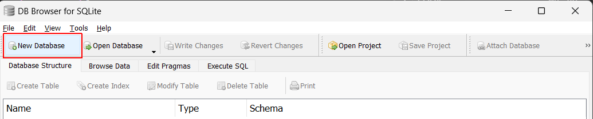
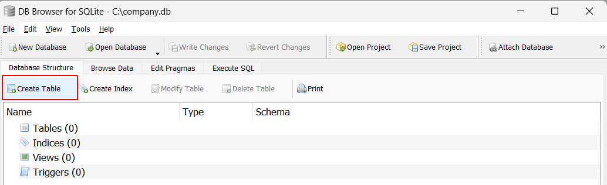
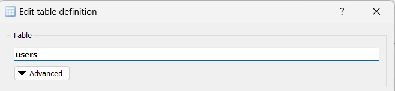
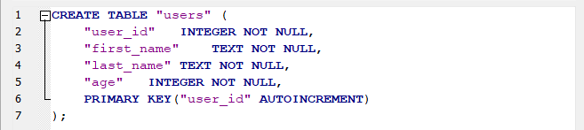
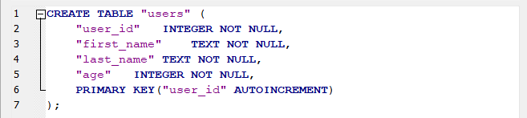
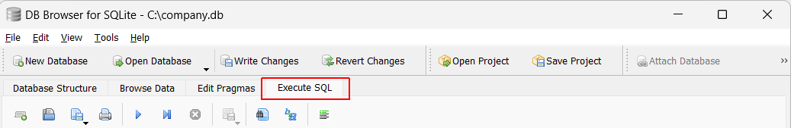
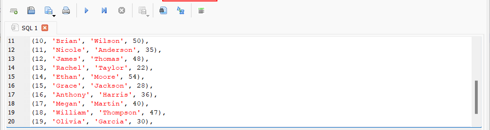
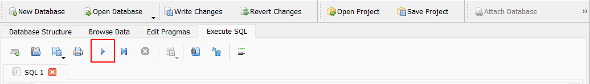
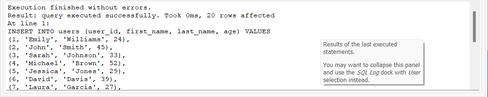
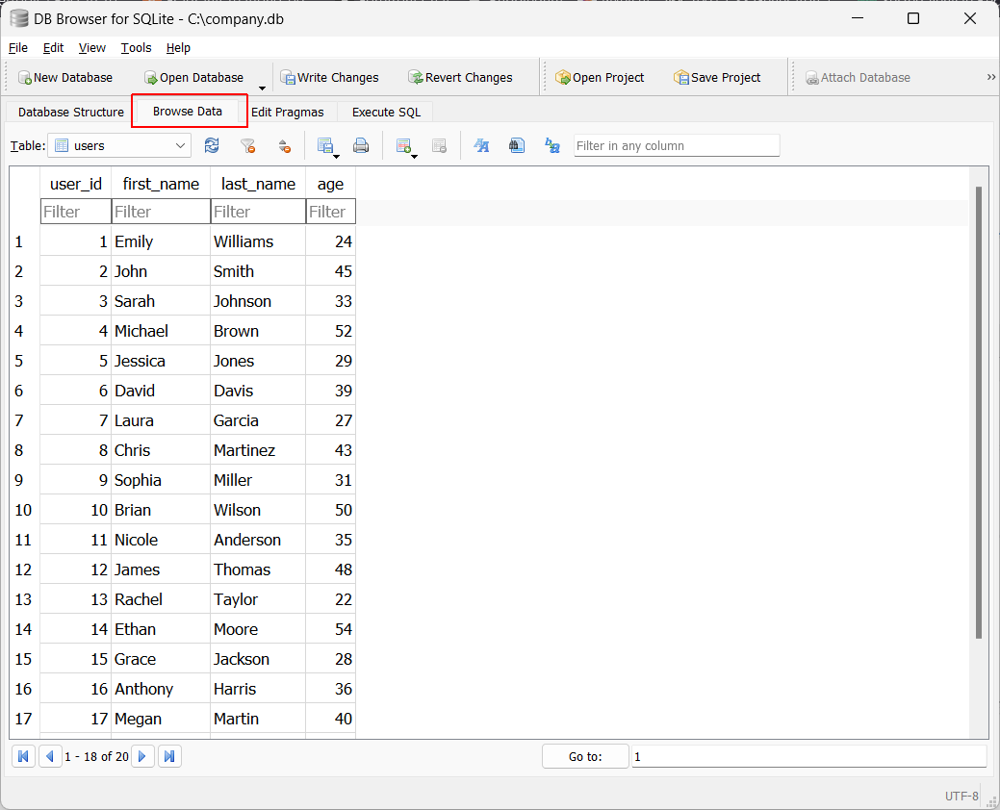

Learning Goals
At the end of this Tutorial, you will be able to:
- Use DB Browser to create a sample database and table.
- Read data from a table using the various features of the SQL SELECT statement.
About the SELECT statement
The SQL SELECT statement is used to retrieve data from one or more tables in a relational database. The data returned is stored in a result table, called the result-set.
To use the SELECT statement, you need a database with a table.
Creating a new database and table
Follow the steps below to create a new database and table with DB Browser.
- In DB Browser, click the New Database tab near the top-left of the screen. 
- Next, click the Create Table tab. 
- In the Edit table definition dialog box, type users as the table name. 
- In the Fields tab, use the Add button to create the four fields with names and properties shown below.
 As you can see, the DB Browser is creating an SQL statement in the lower part of the dialog box.

When finished, click OK.
As you can see, the DB Browser is creating an SQL statement in the lower part of the dialog box.

When finished, click OK. - Click the Execute SQL tab. 
- In the blank space at the top of the tab, paste in the following.
Your screen should now look similar to the following. INSERT INTO users (user_id, first_name, last_name, age) VALUES (1, 'Emily', 'Williams', 24), (2, 'John', 'Smith', 45), (3, 'Sarah', 'Johnson', 33), (4, 'Michael', 'Brown', 52), (5, 'Jessica', 'Jones', 29), (6, 'David', 'Davis', 39), (7, 'Laura', 'Garcia', 27), (8, 'Chris', 'Martinez', 43), (9, 'Sophia', 'Miller', 31), (10, 'Brian', 'Wilson', 50), (11, 'Nicole', 'Anderson', 35), (12, 'James', 'Thomas', 48), (13, 'Rachel', 'Taylor', 22), (14, 'Ethan', 'Moore', 54), (15, 'Grace', 'Jackson', 28), (16, 'Anthony', 'Harris', 36), (17, 'Megan', 'Martin', 40), (18, 'William', 'Thompson', 47), (19, 'Olivia', 'Garcia', 30), (20, 'Nathan', 'Lee', 21); - Click the Run button to execute the SQL statement.  You should now see a message similar to the following. 
- To view the data in your new users table, click the Browse Data tab. 
You now have a table with data to work with the SQL SELECT statement.
Working with the SELECT statement
See the link below: